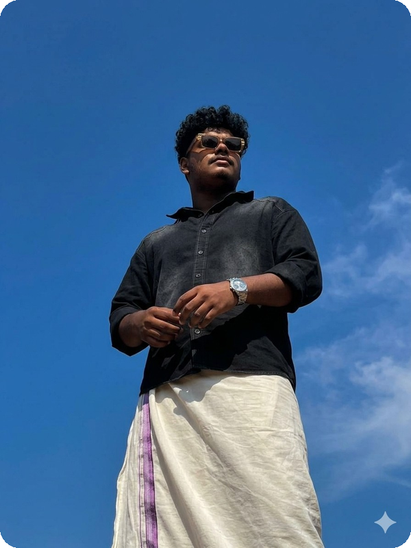
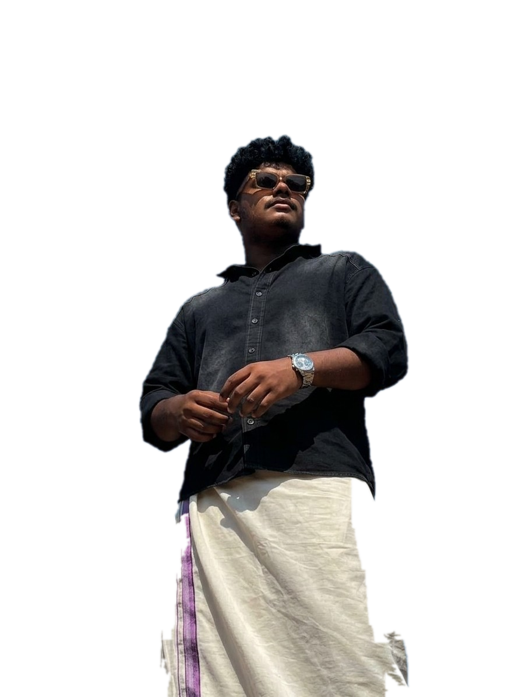
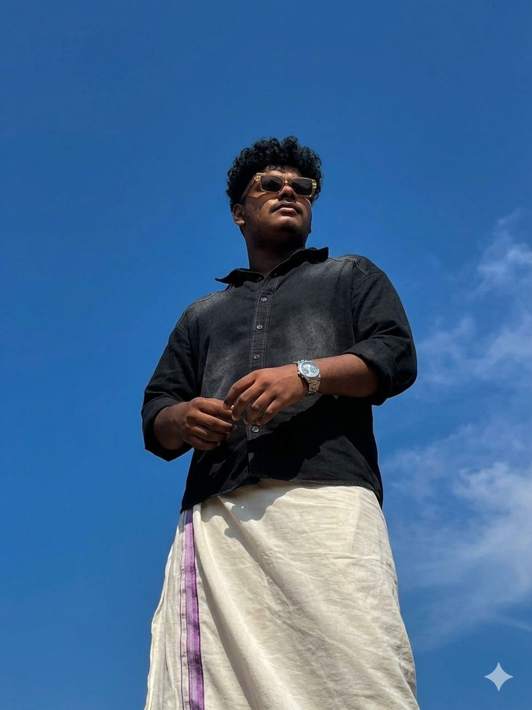
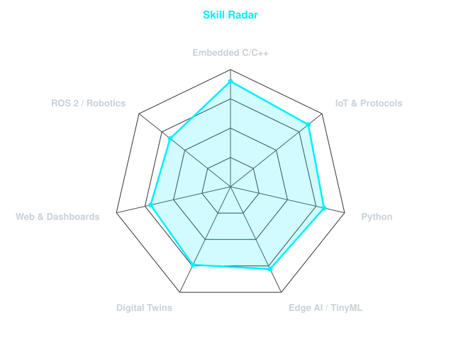
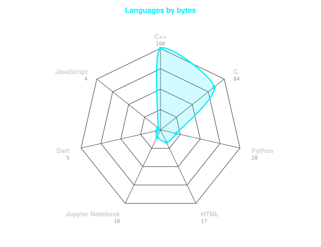
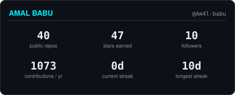

assets/portrait.png — photo--sky-round
Everything here is a file in assets/. Anything marked missing has not been
generated yet — the metrics.* panels only exist after the Actions workflow
runs on GitHub. This page is not the README; it is a way to eyeball the artwork
without pushing.



All 24 treatment x backdrop combinations are in assets/options/
— open _grid-dark.png / _grid-light.png to compare
them, then copy the one you want over assets/portrait.png.


